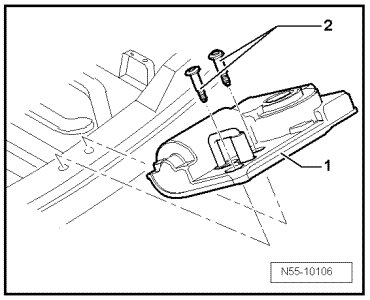

Striker Pin With Closing Assist
Rear Lid
Striker Pin with Closing Assist
• The same removal and installation instructions apply for striker pins without closing assist.
Removing
- Remove the lock carrier cover.

- Remove the bolts - 2 - and remove striker pin - 1 -.
Installation
- Install striker pin - 1 -.
Further installation is in reverse order of removal.
- Tightening specifications: Bolts - 2 - 25 Nm
- Striker pin, adjusting, refer to --> [ Striker Pin, Adjusting ] Rear Lid